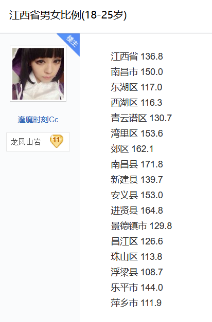

为什么存在彩礼这种现象
为什么存在彩礼这种现象
最近跟一个朋友A聊天，聊到了彩礼。
他问我认识江西那边的人吗？
几年前是不认识的，我大学里也没有一个同学是江西的。
在最近两年，在网上认识了一个江西人B。
我说，你们当地的女性都要彩礼吧？
他说，你以为我付不起彩礼吗？
由此可见，彩礼已经变成了江西一个很独特的文化。在他们的世界里，从来不存在应不应该付彩礼，而是应该付多少彩礼，付不付的起彩礼。
在我家乡，从未听说天价彩礼的说法。
又有一个朋友C，他认识一个江西的姑娘D。
她有一个哥哥，如果她结婚不要彩礼，那她的哥哥结婚的时候就付不起彩礼。
D说，你猜我妈要多少彩礼？
C说，100万？
D说，你想让我下辈子也结不起婚吗？
D的妈妈问男方要50万的彩礼，至今D还没结婚，也许是因为没有找到给的起50万，又打算给50万的人。
在一个小乡村里，是以体力劳动为主的，下地干活什么都是需要青年劳动力。
他们需要男人。
本来性别比例是约等于1：1的。
你生个女儿，我生个女儿。等女儿成年了，与别人家的儿子结婚。别人家的女儿，也会与我家的儿子结婚。
但是这时候有个鸡贼的村民发现，只要他们家只生儿子，不生女儿，那么他们家就会拥有超过其他村民的青壮年劳动力。
别人家有4个小孩，2个儿子，2个女儿。
但是鸡贼村民只生儿子，不生女儿，他们家就有可能有4个儿子，0个女儿。他们可以依靠儿子的经济能力，赚的比其他村民更多的钱。（相同学历下，儿子普遍比女儿赚的钱要多）他们因此可以用更多的钱、更多的彩礼，让优势倒向自己家。
他们可以依靠儿子的武力，种更多的地或者去厂里打工、挖矿、当兵，很多岗位都只要男不要女。（儿子的力气比女儿大，种田更方便）
X家有2个儿子，2个女儿。儿子每人每年赚6万，女儿每人每年赚4万。孩子们的年收入 2x6 + 2x4 = 20 万
Y家有2个儿子，2个女儿。
鸡贼村民家有4个儿子。儿子每人每年赚6万，每年赚30万。
鸡贼村民的收入24万比其他村民的20万多4万。因此为了抢夺同村的适龄女性，鸡贼村民愿意多出4万的彩礼。
本来X家打算把女儿嫁给Y家，因为彩礼鸡贼村民出的更高，就把女儿嫁给了鸡贼村民。
以此类推。
大家都觉得生儿子占便宜，都觉得哪怕自己家不生，其他家庭也会生女儿的。只要结婚的时候多出一点彩礼就可以了。
久而久之，彩礼的价格越来越高。
极端的性别比例
与天价彩礼相对应的，是极端的性别比例。
中国抛弃健康女婴的事情，哪怕在国际上都久负盛名。


正常的性别比例是多少


1 | |
可以看出，不存在流产女胎、杀女婴的情况下，正常的性别比是不到1的。女性人口数量大于男性人口数量。女性人口比男性人口多是因为女性的自然寿命比男性长5年以上。这些多出来的都是高寿老太太。70岁及以上人口性别比（男：女）88.1∶100 。
但是如果我们看看重男轻女，存在流产女胎、杀女婴的国家。


没有一个省份是类似韩国、日本、加拿大一样，性别比例是98左右的，而北京的120.21、上海130.93的性别比例在所有数据中尤其刺眼。
下面我们来看看天价彩礼的江西的性别比例。

仅仅看全市性别比例没有什么意义，我们看看适龄婚育人口的性别比例

性别比例畸形成这样，存在畸形天价彩礼也很正常。
天价彩礼不仅仅是迫害了某一个性别。是对男性要天价彩礼，还是杀害女婴，都是不正常的行为。
希望男女不要性别对立，互相体谅另一个性别的难处。如果适龄男性、适龄女性想要反抗这样的制度，可以逃离这些地方，去不要彩礼的地方结婚。
全文完